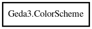

Geda3.ColorScheme – Gschem3 Reference Manual
Packages
Gschem3
Geda3
ColorScheme
ColorScheme
ColorScheme.Dark
@get
color_scheme_changed
ColorScheme
Object Hierarchy:

Description:
public
class
ColorScheme
Stores colors for drawing schematics
Namespace:
Geda3
Package:
Gschem3
Content:
Creation methods:
public
ColorScheme
()
Create an empty color scheme
public
ColorScheme.Dark
()
Create a dark color scheme
Methods:
public
RGBA
@get
(
int
index)
Get a color from this color scheme
Signals:
public
signal
void
color_scheme_changed
(
ColorScheme
scheme)
A signal indicating the color scheme has changed